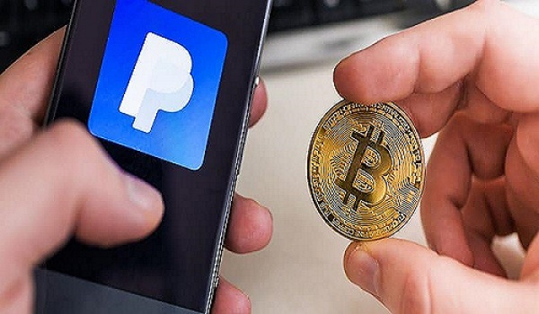

News1
The move comes after nearly two years since PayPal enabled users to buy and sell crypto on its platform.

After rolling out the ability to buy and sell crypto on its platform in October 2020, PayPal is finally allowing users the ability to natively transfer, send and receive digital assets between PayPal and other wallets and exchanges. As of Tuesday, the feature is available to select U.S. users, with the feature expanding to all eligible U.S. users in the coming weeks. The first batch of supported coins consists of Bitcoin
Users would simply need to log in t knowo their accounts and enter the crypto section of the application to start transferring coins. Users are generally required to complete a one-time ID verification before the procedure.
Crypto transfers to recipients outside of PayPal would incur a network fee based on their respective blockchains, but transfers between PayPal users will not incur such fees. To protect users' privacy, the firm generates a new recipient address for each transaction into one's PayPal account. PayPal will also not charge fees for incoming transfers.
The company is also working to integrate other forms of cryptocurrency services, such as central bank digital currencies, to boost its digital footprint. It is also exploring the possibility of launching its own stablecoin, dubbed "PayPal Coin." The discovery came after a developer found evidence of such a stablecoin within the source code of the company's iPhone app.
News2
Prime Minister Giorgia Meloni's new bill also includes an incentive for those declaring crypto for tax purposes.
Crypto traders in Italy will be subject to a 26% capital-gains tax starting in 2023, according to a new budget that won parliamentary approval on Thursday.
Italian Prime Minister Giorgia Meloni's 2023 expansionary budget – which was completed in a rush before the end of the year – features 21 billion euros ($22.3 billion) in tax breaks to assist businesses and households facing the energy crisis, Reuters
In Italy, where crypto
News3
Microstrategy is now holding approximately 132,500 bitcoin following its most recent purchases. This year, the world’s largest cryptocurrency has emerged as “the institutional-grade digital asset,” said Microstrategy founder Michael Saylor.
Microstrategy Acquires More Bitcoin
Nasdaq-listed Microstrategy Inc. announced Wednesday that it has purchased more bitcoin for its corporate treasury. Michael Saylor, the company’s founder and executive chairman, tweeted Wednesday:
Microstrategy has increased its bitcoin holdings by ~2,500
In its
The subsidiary bought approximately 2,395
The bitcoin sale in December marked the first time Microstrategy sold its bitcoin since it began
Saylor said in an
The most positive thing of the year is the emergence of bitcoin as the institutional grade digital asset and the clarity that … there is one crypto asset that’s a digital commodity … Bitcoin is that commodity.
The executive noted that both the
commodity.
Saylor previously
News4
2022 has been a rough and tough year for investors, traders, cryptocurrency businesses, and miners in general. The prolonged bear market, exacerbated by a series of catastrophic events, posed a threat to miners.
Miners were dealing with a variety of issues, including defaulted loans, quarterly losses, and soaring bitcoin hashrates that reached all-time highs. All these factors were affecting the profitability of the miners and were causing sell pressure.
The situation was aggravated when cryptocurrency prices, including Bitcoin’s, plummeted. Bitcoin, which was hovering around $48,000 last year, hit a low of $15,590 by the end of 2022. According to the data collected from The Block, bitcoin miners’ revenue hit $9.55 billion in 2022.
Bitcoin miners’ revenue dropped in 2022
Bitcoin, which is trading at $16,721 at press time, has been on a downward spiral alongside other cryptocurrencies. The falling cryptocurrency prices had a major effect on the income and profits of miners. Even though the $9.55 billion in revenue in 2022 seems like a large number, it is comparatively lower than that of 2021.
Over the course of 2021, bitcoin miners made more than $15 billion in revenue, according to the data from the block. This was actually considered to be a 206% year-over-year increase.
News5
The investor drained $110 million in cryptocurrencies from the platform.
Avraham Eisenberg, the crypto investor whose
The self-described game theorist admitted his role in draining Mango Markets’ treasury shortly after the incident in mid-October, and may now be the first U.S. resident to face charges for his role in manipulating a
Eisenberg faces charges of commodities fraud and commodities manipulation, according to a
A deposition signed by FBI Special Agent Brandon Racz alleges Eisenberg “willfully and knowingly” manipulated the sale of a commodity – namely futures contracts on Mango Markets.
“Eisenberg engaged in a scheme involving the intentional and artificial manipulation of the price of perpetual futures contracts on a cryptocurrency exchange called Mango Markets, and other manipulative and deceptive devices and contrivances.”